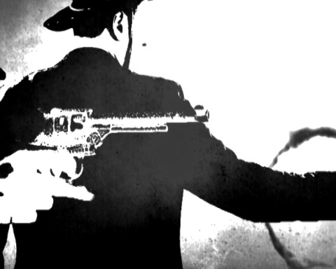

Marc Hautmann & Patrick Nicolas

Marc Hautmann * 1974 in Neu-Ulm. Studium Grafik/Illustration in der Freien Kunstwerkstatt München bei Hans Seeger. Er lebt und arbeitet in Neu-Ulm.
Patrick Nicolas * 1962 in Rodez, Frankreich.
Studium an der Ecole des Beaux-Arts Toulouse. Er lebt und arbeitet
in Ulm.
www.patricknicolas.info
Ausstellungen (Auswahl 2017): Museum zur Geschichte von Christen und Juden, Laupheim – Mittelschwäbischen Heimatmuseum Krumbach – Kulturhaus Schloss Großlaupheim – Haus für Kunst und Kultur, Kloster Roggenburg
Duell
2016 – Videoinstallation
Zwei Projektionen auf eine Leinwand – 100 cm x 380 cm x 150 cm
Konzept, Installation, Video: Marc Hautmann, Patrick
Nicolas
Der thematisierte Dualismus von Gut und Böse gehört zum Erfolgsrezept des Kinos. In der experimentellen Videoinstallation von Hautmann und Nicolas wird dieser kritisch in Frage gestellt. Selbstgedrehte SW-Filme verschiedener Klischee Szenen werden hier - gleich einem Duell - von zwei Seiten auf eine transparente Leinwand projiziert. Die sich überlappenden Bilder lassen - in Endlosschleife abgespielt - immer wieder neue, eigenständige „Bildduelle“ entstehen.